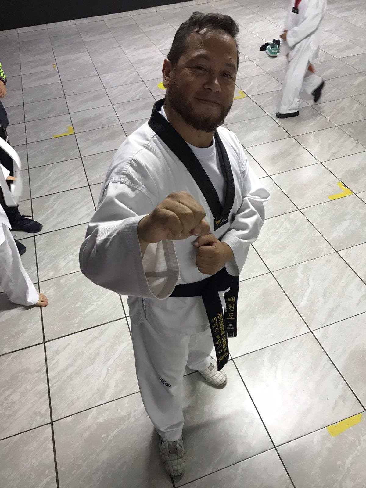

Fundador del Kwan Hoga Ki y director técnico del Club Deportivo Lynx Hoga Ki.
5 Dan
Cinturón negro en Taekwondo
4 Dan
Cinturón negro en Hap Kido
Academia de formación marcial
En Lynx Hoga Ki formamos practicantes de Taekwondo y Hap Kido con una metodología que une Cortesía, Integridad, Perseverancia, auto control y espíritu indomable.

Dirección técnica
Fundador del Kwan Hoga Ki y director técnico del Club Deportivo Lynx Hoga Ki.

Programas
Desarrollo de técnica, elasticidad, coordinación, formas, combate y preparación competitiva.
Defensa personal, control, luxaciones, proyecciones y respuesta efectiva en situaciones reales.
Respeto, perseverancia, liderazgo y disciplina como base del crecimiento personal de cada alumno.
Horarios
Sesiones pensadas para mantener constancia, progresión técnica y disciplina semanal.
Enfocado en alumnos nuevos o cinturones no tan avanzados, con trabajo de bases, técnica y progresión formativa.
Horario de mayor intensidad, pensado para practicantes con más ritmo de entrenamiento y una exigencia técnica superior.
Valores
En Lynx Hoga Ki la formación marcial se apoya en valores claros que orientan el crecimiento técnico, personal y humano de cada practicante.
Estos fundamentos acompañan el proceso de aprendizaje dentro y fuera del tatami, fortaleciendo el carácter, la disciplina y la identidad del club.
Ubicación
Lynx Hoga Ki te espera en la dirección Calle 49 Bis Sur #5C-23, en un gimnasio ubicado en el 4.º piso.
Contacto: 310 306 7953 - 322 830 7225
Google Maps
Bogotá, D.C. • Gimnasio en el 4.º piso
Ver ubicación